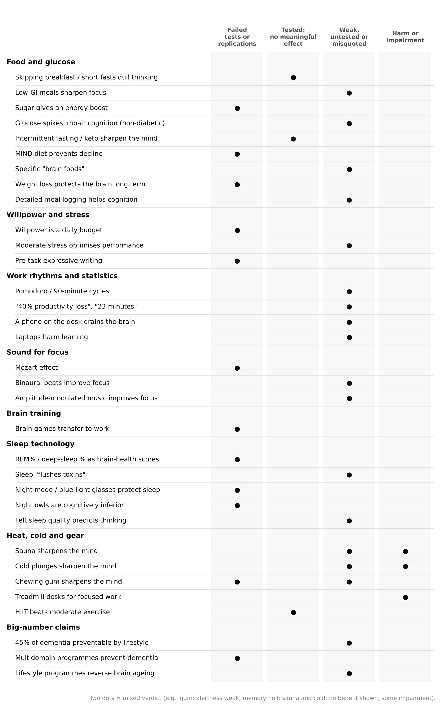
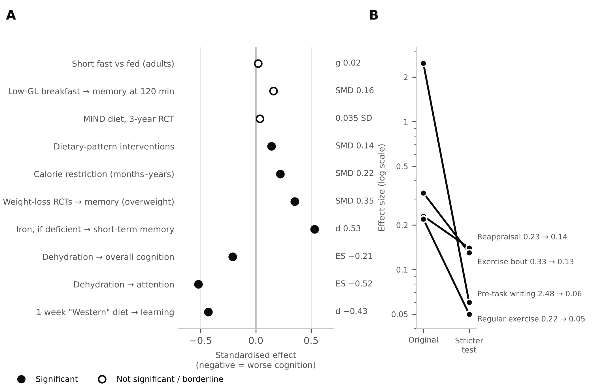

Abstract
Background: Working adults are offered many tactics for sharper thinking: meal timing and glucose tracking, “brain foods”, brain-training games, focus music, fixed work rhythms, sleep-stage scores, and heat or cold exposure. Few of these claims are presented with the strength of their evidence.
Methods: This evidence-graded narrative review examined popular cognitive-enhancement claims aimed at working adults, drawing on meta-analyses, randomised controlled trials, replication studies, large cohorts and Mendelian randomisation studies. Each claim was graded on four levels (STRONG, MODERATE, LIMITED-EMERGING, NULL-CONTRADICTED), and better-supported alternatives were identified.
Results: Skipping breakfast or short fasting did not meaningfully change adult cognition (pooled g 0.02 across 71 studies). Glycaemic-index effects were null or trivial, sugar did not improve mood and increased fatigue within an hour (NULL-CONTRADICTED), and no evidence supports glucose-spike coaching for cognition in non-diabetic adults. The largest brain-diet trial (MIND) was null. “Willpower budgets” (ego depletion) failed multi-laboratory replications (d 0.04–0.10). The Mozart effect and far transfer from brain-training games did not survive bias control, evidence for binaural beats was contested, and evidence for amplitude-modulated music came from one industry-linked research programme (LIMITED-EMERGING). Fixed Pomodoro or 90-minute work cycles lacked support, wearable REM and slow-wave percentages were not associated with dementia, blue-light filters did not change sleep, and sauna, cold water and chewing gum lacked adequate evidence as cognitive tools. By contrast, hydration (MODERATE), avoiding heavy meals before monotonous work (LIMITED-EMERGING but consistent), correcting iron deficiency, overall diet pattern and waist size had better support.
Conclusions: The additive inputs most heavily marketed for cognition have the weakest or null evidence, while better-supported levers are mostly subtractive or concern deficiency and overall pattern. Detailed meal logging does not meet the evidence bar for cognitive benefit.
- cognitive enhancement
- intermittent fasting
- glycaemic index
- ego depletion
- brain training
- binaural beats
- Mozart effect
- sleep staging
- evidence grading
- working adults
1. Introduction
Wellness, productivity and wearable products promise working adults sharper thinking through added inputs: particular foods and meal timings, glucose monitoring, brain-training games, specially designed audio, strict work rhythms, sleep-stage scores and physical “biohacks” such as saunas and cold plunges. Many of these claims rest on a plausible mechanism and an early, often small, positive study. Fewer have survived replication, bias correction or testing in adults of working age.
Overstated claims carry real costs. They divert time and attention from better-supported levers, they can encourage unnecessary tracking, and when they fail they undermine trust in sound advice. Claims that a behaviour “prevents dementia” or “reverses brain age” are especially consequential because they are rarely tested directly.
This review grades the peer-reviewed evidence for popular cognitive-enhancement claims relevant to working adults and, for each claim, identifies what the evidence supports instead. It is one of three companion reviews; the others cover sleep, stress and recovery, and work habits, physical activity, learning strategies and generative AI (companion reviews, in preparation).
2. Methods
2.1 Design
This is an evidence-graded narrative review. It was not conducted as a systematic review, and no protocol was registered.
2.2 Selection of claims
Claims were included if they are commonly promoted to working adults in wellness, productivity and wearable products as ways to improve day-to-day cognitive performance or long-term brain health, and if they have been directly tested or explicitly examined in peer-reviewed research. Claims concerning environment, substances and supplements were out of scope, except where supplement trials show whether a nutrient status matters.
2.3 Search and selection of evidence
Sources were identified through searches of PubMed/MEDLINE and of publisher and citation databases accessed through Digital Object Identifiers (DOIs), which also captured journals in psychology, management and education that are not indexed in PubMed. Searches combined terms for each component listed in Section 2.2 with terms for cognitive outcomes (for example cognition, attention, working memory, memory, creativity, cognitive decline and dementia) and for study design (meta-analysis, systematic review, randomised controlled trial, cohort and Mendelian randomisation). Only English-language publications were included. The author selected and graded the evidence, with assistance from AI tools (Section 2.6). The final reference list comprises 187 sources published between 1982 and 2026, of which at least 171 are indexed in PubMed.
For each claim, priority was given to meta-analyses, multi-laboratory and preregistered replications, randomised controlled trials (RCTs), large prospective cohorts and Mendelian randomisation (MR) studies. This review is part of a programme of three companion reviews that drew on 17 topic-specific evidence summaries covering several hundred peer-reviewed sources.
2.4 Verification of figures
Every quantitative figure was checked against the abstract or full text of its primary source. Figures that could not be verified against a primary source — for example, numbers reported only in press releases or effect sizes seen only in secondary summaries — were excluded.
2.5 Evidence grading
Each claim was graded on a four-level scale:
- STRONG: several consistent meta-analyses or RCTs.
- MODERATE: one good meta-analysis, or consistent large cohorts or trials.
- LIMITED-EMERGING: single or small studies, or indirect or conflicting evidence.
- NULL-CONTRADICTED: well-powered tests or replications failed.
Where the evidence fitted none of these levels, a plain descriptor is used (“unsupported”, “unverified”, “untested”, “conflicting” or “no direct evidence”). “Unsupported” means that no well-powered test exists, which is not the same as a failed test. Horizons are PERFORMANCE (hours to days), M-SHORT (days to weeks) and M-LONG (years to decades). Effect sizes are standardised differences (SMD, d or g; about 0.2 is small and 0.5 medium) or hazard, risk and odds ratios as reported by the source studies.
2.6 Use of AI tools
Generative AI tools, including Claude (Anthropic), were used in part to assist with identifying and summarising literature, structuring the manuscript, preparing figures and editing language. The author reviewed all AI-assisted content, checked every claim, figure and reference against the primary sources, and takes full responsibility for the content of this article. AI tools are not listed as authors.
3. Results
3.1 Food, meal timing and glucose
3.1.1 Breakfast, fasting, glycaemic index and sugar do not move adult cognition
The largest synthesis of acute fasting — 71 studies and 3,484 participants with a median 12-hour fast, roughly an overnight fast plus a skipped breakfast — found no meaningful difference between fasted and fed participants (g 0.02, 95% CrI −0.05 to 0.10); in the authors' full-text manuscript the adults-only estimate was g −0.01 (N = 2,754), against a small benefit of eating in five child and adolescent studies (g 0.14) [1]. The published abstract also reports modest reductions in performance during fasts for younger (versus older) participants and for longer fasts, and no included study had a mean age above about 40. Fasted participants did slightly worse when tested later in the day (+0.05 SMD per hour) and on inhibitory control (0.16), and slightly better on cognitive flexibility (−0.23). In a 10-day randomised trial of 16-hour breakfast-skipping in 122 adults, objective performance and mood were unaffected, but people felt less concentrated in fasted mornings [2]. Grade: MODERATE evidence of no meaningful acute effect in adults up to about 40 (PERFORMANCE), with small deficits possible in the youngest adults and during long fasts; the “small but robust” memory benefit in an older narrative review lacks a pooled estimate [3] (LIMITED-EMERGING), and the reliable breakfast benefit in undernourished children does not transfer [4]. Glycaemic load had no effect for two hours after breakfast, and only a borderline memory benefit of low-GL meals after 120 minutes (SMD 0.16, CI touching zero) in 15 adult studies [5]; a double-blind trial in 65 young adults found no memory difference between high- and low-GI desserts [6] — LIMITED-EMERGING. The “sugar rush” is contradicted: across 31 studies, carbohydrate improved mood at no time point and brought more fatigue and less alertness in the first hour [7] (NULL-CONTRADICTED). Glucose as a willpower fuel has weak evidential value [8], and the ego-depletion effect it was meant to explain was near zero in multi-lab replications (d 0.04 and 0.06) [9,10] — NULL-CONTRADICTED. Laboratory glucose drinks can aid memory (pooled d 0.56 but heterogeneous [11]), yet people with good glucose regulation can get worse [12] — LIMITED-EMERGING. Continuous-glucose “spike” coaching for cognition has no evidence base in non-diabetic adults: in about 13,000 ARIC participants, midlife glucose peaks predicted dementia and 20-year decline only in people with diabetes [13], and visit-to-visit variability across years related to lower scores cross-sectionally but not to six-year decline outside incident diabetes [14].
3.1.2 Fasting regimes and dieting styles
Fasting regimes and dieting styles also leave cognition largely unchanged. Four weeks of 16:8 time-restricted eating in 43 women changed neither working memory nor attentional control [15], and a review found intermittent fasting safe for cognition but based on “only 9 low-quality RCTs” [16] — LIMITED-EMERGING (no harm, no gain). Months-to-years of calorie restriction produce small gains (SMD 0.22 across 11 RCTs, with fasting no better than continuous restriction [17]), but in the closest working-age trial — CALERIE, healthy non-obese adults aged about 38 prescribed 25% restriction for two years (11.7% achieved) — spatial working memory did not differ from control (P > 0.99) [18,19], with a “slightly positive” effect only under different covariate adjustment [20]. Ketogenic and very-low-carbohydrate diets showed no cognitive benefit over higher-carbohydrate diets in small trials ([21], n = 11), and over a year mood improved more on a low-fat diet [22] — LIMITED-EMERGING.
3.1.3 What survives: meal size, timing and fluids
The acute nutrition effects that hold up concern how much and when, not what. A lunch 40% larger than usual increased focused-attention and search errors in an afternoon test of 35 women [23]; after a night restricted to 5 hours, a heavy 922-kcal lunch versus a light 305-kcal lunch increased sleepiness-related lane drifting in a two-hour monotonous drive, with differences emerging after about 30 minutes [24]; and a review of 11 experiments found impairment “more likely after a large lunch than a small lunch” [25]. At night, in a randomised simulated-night-shift trial of 39 adults, a small snack (about 10% of daily energy) at 00:30 beat both a large meal (about 30%) and not eating on 04:00 vigilance lapses, reaction time, working memory and simulated driving [26]. Grade: LIMITED-EMERGING but consistent (PERFORMANCE) — the effect is delayed, largest for monotonous sustained-attention work, and worse after short sleep, which describes launch nights and travel days. Fat versus carbohydrate composition gives inconsistent results [27,28], and the afternoon dip itself is circadian (see the sleep section). Short runs of poor eating have measurable but reversible costs: one week of a high-saturated-fat, high-sugar “Western” diet reduced hippocampal-dependent learning in 110 lean young adults (d 0.43), recovering three weeks later [29], and five days of a 75%-fat diet impaired attention and speed in 16 young men [30] — LIMITED-EMERGING (PERFORMANCE, M-SHORT).
Hydration is the acute nutrition element with the most direct evidence. Across 33 studies, dehydration impaired cognition by ES −0.21 overall, with attention (−0.52), motor coordination (−0.40) and executive function (−0.24) most affected and larger effects above 2% body-mass loss (−0.28 vs −0.14) [31], although a meta-analysis restricted to exercise-induced (“active”) hypohydration found no significant impairment (g −0.18) [32]. Mood and fatigue effects are more consistent: losses of about 1.4–1.6% of body mass raised fatigue, tension, perceived task difficulty and headache in young men and women [33,34] — studies funded by or co-authored with Danone Research — and independent trials agree: after four hours at 30 °C with a mean loss of only 0.72% of body mass, drinking 300 mL of water improved memory and focused attention in 101 adults [35], and after 12–24 hours of fluid restriction, 200 mL relieved fatigue and mood disturbance while 500 mL was needed to restore working memory [36,37]. Grade: MODERATE (PERFORMANCE), contested for cognition below 2% loss. Thirst is a useful prompt but not a gatekeeper — water sped reaction time only in thirsty people [38], while 25 mL improved visual attention regardless of thirst in 96 adults [39] — LIMITED-EMERGING. Urine colour tracks hydration only as a coarse flag: the widely quoted “+1.1 litres a day per two shades lighter” applies to 24-hour pooled urine [40], and first-morning samples relate poorly to intake [41]. Water-volume logging is not justified: in 1,957 adults aged 55–75 with metabolic syndrome, higher serum osmolarity predicted faster two-year decline (β −0.010) but water intake did not [42], and meeting adequate-intake targets was unrelated to cognition in NHANES [43] — M-LONG hydration LIMITED-EMERGING.
3.1.4 Long-term diet works through pattern, processing and deficiency, not “brain foods”
Mediterranean-style eating is associated with roughly 10–20% lower risk of cognitive disorders in most cohort meta-analyses (e.g., RR 0.79 in 9 cohorts [44]; dementia HR 0.89 in 23 studies [45]), but heterogeneity is high and recent results are mixed: the newest cohort meta-analysis was not significant (HR 0.85, 0.71–1.03) [46], the Malmö midlife cohort (28,025 adults, mean age 58, about 20 years) found no association (HR 0.93) [47], and only 8 of 66 cognitive outcomes favoured the diet across five RCTs [48]. The workplace RCT closest to working-age professionals — DIRECT PLUS, 284 abdominally obese employees (88% men, mean age 51) given monitored lunches and gym access for 18 months — found no cognitive difference between diets, and a smaller decline in hippocampal occupancy on the high-polyphenol Mediterranean diet in participants aged 50 or over (−0.8% vs −1.3%), with “similar patterns” reported in younger participants, tied to improved insulin sensitivity [49]. The MIND diet emerged from Chicago cohorts (pooled HR 0.83 per 3-point increment [50]), but its three-year RCT in 604 adults aged 65 or over, against a control diet with the same mild calorie restriction, found no cognitive or MRI difference (0.035 SD, P = 0.23) [51]. Across 19 RCTs of dietary-pattern interventions (often bundled with calorie restriction or exercise) in 12,119 healthy adults, the pooled cognitive benefit was small (SMD 0.14) [52]. The 2024 Lancet Commission did not include diet among its 14 risk factors, concluding there is “not enough evidence to say [healthy diets] are directly useful for dementia prevention” [53], while WHO conditionally recommends a Mediterranean-like diet and strongly recommends against B and E vitamins, omega-3 and multi-nutrient supplements for cognitive risk [54]. Grades: Mediterranean pattern MODERATE (borderline) association, LIMITED causal (M-LONG); MIND as a specific intervention NULL-CONTRADICTED; healthy dietary-pattern interventions MODERATE for a small general effect.
Processing and specific food groups give clearer observational signals. In ELSA-Brasil, 10,775 public servants aged 35–74 (mean 51.6) whose ultra-processed-food (UPF) intake was above the lowest quartile showed 28% faster global cognitive decline and 25% faster executive decline over eight years [55]; in UK Biobank each 10% higher UPF share by weight was associated with 25% higher dementia risk, and swapping 10% UPF for minimally processed food with 19% lower risk [56]; a US cohort found the association independent of Mediterranean, DASH or MIND adherence [57]; and a 2026 meta-analysis gave HR 1.14 overall and 1.19 in people under 60 [58], though another meta-analysis was not significant for dementia [59] — MODERATE (observational, M-LONG), one of the few diet exposures with working-age signals. Processed red meat was associated with higher dementia risk in US adults with mean baseline age 48.9 (HR 1.13; replacing a daily serving with nuts or legumes HR 0.81 [60]) and in UK Biobank (HR 1.44 per 25 g/day, while unprocessed red meat was inversely associated [61]) — MODERATE. Fish intake was associated with lower dementia risk (RR 0.82 highest vs lowest; risk of cognitive impairment down to RR 0.70 at 150 g/day [62]), whereas omega-3 supplements were null in older adults [63] — MODERATE (observational). Flavonoid-rich diets were associated with lower dementia risk in 121,986 UK Biobank adults aged 40–70 (HR 0.72 [64]), but the large cocoa-extract trial was null [65]. Specific “brain foods” — berries, leafy greens, nuts, olive oil, eggs — rest on single cohorts or small or null trials (none of five walnut RCTs improved overall cognition [66]) — LIMITED-EMERGING. Overall diet quality in midlife Whitehall II civil servants was not significantly associated with dementia over 25 years (HR 0.97, 0.97 and a borderline 0.87 across waves [67]) — LIMITED-EMERGING (mixed). Sugar-sweetened beverages are mixed (LIMITED-EMERGING).
Nutrient deficiency, not optimisation, is what matters for working-age performance. In mostly menstruating adults (mean age 34.6), iron given to people who were iron-deficient but not anaemic improved short-term memory (d 0.53) and fatigue (d 0.34), with no effect in iron-replete participants [68]; in women aged 18–35, rising ferritin tracked a 5–7-fold improvement in cognitive performance [69]; but intravenous iron in iron-deficient blood donors did not change overall cognition [70] — LIMITED-EMERGING, approaching MODERATE for correcting deficiency (PERFORMANCE, M-SHORT). B-vitamin supplementation lowered homocysteine by 26–28% without cognitive benefit in 22,000 people [71], helping only older adults with MCI and raised homocysteine [72] — LIMITED for B12/folate deficiency, NULL for supplementing replete adults. Vitamin D deficiency (<25 nmol/L) was associated with HR 1.79 for dementia, with Mendelian-randomisation support for a threshold effect of deficiency [73], but genetically higher vitamin D did not improve cognitive scores [74] — LIMITED-EMERGING to MODERATE for vitamin D deficiency and dementia, NULL for supplementing replete adults.
3.1.5 Waist, not weight, is the body-composition signal
Midlife obesity (BMI ≥30) is associated with later dementia (RR 1.33 across 589,649 people; overweight 25–29.9 not significant at RR 1.07 [75]), with risk rising above a BMI of about 29–30 [76] and HR 1.93 for obesity at age 50 in Whitehall II civil servants, whose BMI began to fall about 8 years before diagnosis [77]. In 1.3 million people, each 5 kg/m² looked protective when BMI was measured within 10 years of diagnosis (HR 0.71) but harmful when measured more than 20 years before (HR 1.16) — the late-life “obesity paradox” is reverse causation [78]. Mendelian randomisation supports a causal effect on vascular dementia (OR 1.63 per SD of BMI, partly through blood pressure [79]) but only a tiny or null one on Alzheimer's disease (OR 1.03 [80]) — MODERATE association (M-LONG); the Lancet Commission weights obesity at about 1% of dementia. Central fat is the sharper signal: midlife sagittal abdominal diameter predicted dementia 36 years later even after adjusting for BMI (top vs bottom quintile HR 1.92 [81]), although pooled waist circumference was weaker (HR 1.10) and not significant under 65 [82] — LIMITED-EMERGING to MODERATE. Obesity combined with a high waist-to-hip ratio went with the lowest grey-matter volume in 9,652 UK Biobank adults aged about 55 [83], but a life-course Mendelian randomisation attributes much of that signal to childhood adiposity [84]. For day-to-day performance, the largest Mendelian randomisation (378,877 people) found no causal effect of adiposity on reaction time or memory [85], while others report small causal effects of central or visceral fat — about −0.07 SD of cognition per SD of waist-to-hip ratio [86] and β −0.14 for visceral fat in 8,769 Singaporeans with mean age 51 [87] — LIMITED-EMERGING with conflicting MR. WHO's 2026 guideline notes that waist-to-hip ratio is “a more reliable metric than BMI” [88].
Intentional weight loss gives small short-term gains and no proven long-term protection. Across 20 studies (1,019 adults, mean age 50), RCTs of diet or activity improved memory by SMD 0.35, with publication bias [89]; WHO 2026 added a conditional recommendation that dietary restriction “may be offered” to adults with overweight or obesity (low-to-moderate certainty) — MODERATE for a small memory effect in adults with overweight or obesity, near-null in healthy non-obese working-age adults (CALERIE). The longest trial, Look AHEAD (3,802 adults with type 2 diabetes aged 45–76, about 10 years), produced no difference in mild cognitive impairment (6.4% vs 6.6%) or dementia (1.8% vs 1.8%), with a small relative cognitive deficit in participants with obesity [90,91] — NULL-CONTRADICTED for long-term protection from weight loss per se. Newer analyses point to visceral-fat loss and glycaemic control rather than kilograms: visceral-fat loss in four lifestyle trials predicted larger brain volumes 5–16 years later independent of weight loss [92] (LIMITED-EMERGING). High weight variability was associated with higher dementia risk (HR 1.40 across 16 cohorts [93]), including OR 1.74 for the most variable quartile among Israeli working men aged 40–70 [94] — MODERATE association, LIMITED causal. Crash dieting has a short-term price: in the first week of unsupported dieting, overweight women showed poorer vigilance and planning with a cortisol rise, which group-supported dieters did not [95] (LIMITED-EMERGING).
3.1.6 Verdict on detailed meal logging
The verdict on meal logging follows directly. None of the elements a meal log captures — food items, macros, glycaemic index, breakfast compliance, fasting windows or glucose spikes — has evidence of a meaningful acute cognitive effect in healthy adults, and the elements that do matter can be assessed more simply: hydration and thirst, with urine colour as a coarse flag; meal size before monotonous or high-stakes work and a snack rather than a large meal (or nothing) during late-night work; periodic screening of diet pattern, focused on the share of ultra-processed food, processed meat, fish and plant foods; clinical testing of ferritin or vitamin D where risk factors exist; and a waist or waist-to-hip measure rather than scale weight. This recommendation is an inference from the grades above; no study has compared meal logging with these alternatives.
3.2 Willpower, stress and emotion claims
Claim: willpower is a limited daily budget that decisions use up. The ego-depletion model, which holds that exerting self-control draws down a limited resource, underpins advice to ration decisions across the day. Three preregistered multi-laboratory replications found effects close to zero (d 0.04, 0.06 and 0.10) [9,10,96], and the idea that glucose refuels willpower has weak evidential value [8]. Verdict: NULL-CONTRADICTED. Field data on decision quality drifting across long work sessions are mixed and do not depend on this mechanism (see the companion review on work habits).
Claim: a moderate amount of stress optimises performance. This idea, usually attributed to the Yerkes–Dodson law, has no direct empirical support at work. The original 1908 work concerned habit formation in mice and was later recast as a general performance law without new evidence [97,98]. In a meta-analysis of experiments, induced stress lowered creativity overall (d −0.20), time pressure was the most harmful stressor for adults, and the apparent gain from mild evaluative threat was not significant [99]. Verdict: unsupported — not formally null, because no well-powered test exists, but not a sound basis for advice. A related tactic, reappraising arousal as helpful, produced a small performance gain that shrank to d 0.14 after correction for publication bias [100] (LIMITED-EMERGING to MODERATE).
Claim: writing about worries just before a high-stakes task frees working memory. The original finding (d 2.48) failed a high-powered preregistered replication (d 0.06) [101] and was not supported by a 21-study meta-analysis [102]. Verdict: NULL-CONTRADICTED for the pre-task effect. Expressive writing over several sessions reduces distress only slightly (g −0.12) [103].
3.3 Work-rhythm formulas and productivity statistics
Claim: working in fixed Pomodoro (25/5) or 90-minute “ultradian” cycles boosts productivity. Three small experiments in students comparing Pomodoro-style breaks with other schedules found no performance differences and mixed effects on mood [104–106]. No peer-reviewed study shows that working in 90-minute blocks improves performance; the idea traces to a hypothesis paper [107]. Verdict: LIMITED (mixed) for Pomodoro and no peer-reviewed support for 90-minute cycles. Breaks themselves raise vigour and reduce fatigue [108]; the problem is the fixed formula, not the break.
Claim: multitasking costs 40% of productivity, and refocusing after an interruption takes 23 minutes. Task-switching costs are real and robust in the laboratory [109], but these two specific figures were not found in the abstracts or summaries of the peer-reviewed sources to which they are usually attributed [110–112]. Verdict: unverified. The underlying studies, not the numbers, should be cited.
Claim: a phone merely lying on the desk drains cognitive capacity. The “brain drain” effect failed direct and conceptual replications [113] and survives in meta-analysis only as a small effect on working memory (memory g −0.23) [114,115]. Verdict: small working-memory effect only. Notifications are the better-supported problem: a notification disrupted an attention task even when it was ignored [116].
Claim: typing notes on a laptop harms learning compared with handwriting. The influential laptop finding did not survive direct replication, leaving at most a small longhand advantage (g 0.25) [117,118]. Verdict: LIMITED (mixed). How material is reviewed matters far more: retrieval practice with feedback outperforms restudying (g 0.50) [119].
3.4 Sound for focus
Claim: listening to Mozart makes you smarter. Spatial-task gains after listening to music disappeared once arousal and mood were controlled [120], and a 2023 multiverse meta-analysis attributed the effect to low statistical power and publication bias [121]. Verdict: NULL-CONTRADICTED (provisional).
Claim: binaural beats improve focus. Pooled effects of g 0.40–0.45 come from small, heterogeneous studies [122,123], whereas a careful multi-experiment study found rather strong evidence against an effect on sustained attention [124], and EEG entrainment has been inconsistent [125]. Verdict: LIMITED, contested, trending null for vigilance.
Claim: music with added amplitude modulation improves focus. The main peer-reviewed evidence is a multi-experiment study comparing music with fast amplitude modulation, music with slower modulation and pink noise during a sustained-attention task [126]. The behavioural benefit of strongly modulated music appeared only when it was heard early in the testing session (n = 83); faster modulation was associated with greater activity in attentional networks on fMRI (n = 34) and stronger stimulus–brain coupling on EEG (n = 40); and in two online experiments (n = 175), beta-range modulation helped more than other rates in participants with more ADHD symptoms. The music was produced by a commercial focus-music company that employed the lead author, a competing interest disclosed in a later correction [127]. Verdict: LIMITED-EMERGING — a plausible mechanism and an early, order-dependent behavioural signal from one research group, without independent replication or tests in working adults during real work.
The better-supported advice is subtractive. Background speech and lyrics impair reading and verbal memory, with lyrical music about as disruptive as speech and instrumental music less so [128,129] (STRONG). Self-chosen music may reduce mind-wandering during low-demand, routine tasks [130] (LIMITED-EMERGING).
3.5 Brain training and “cognitive exercise”
Claim: brain-training games make you sharper at work.
Commercial brain training fails the transfer test. People reliably improve at the trained games (near transfer, STRONG), but a second-order meta-analysis found far transfer equal to zero once placebo effects and publication bias were controlled [131], working-memory training did not improve intelligence or other far-transfer measures [132], 11,430 adults training online for six weeks showed no transfer even to closely related untrained tasks [133], and ten weeks of Lumosity in 128 young adults changed neither decision-making nor cognitive performance beyond retest effects [134]. A Cochrane review found only one eligible midlife trial and could not determine efficacy [135]; in the ACTIVE trial of adults averaging 74, speed-of-processing training was not associated with lower 20-year dementia risk as randomised (HR 0.87, 0.72–1.05) [136]. Older-adult meta-analyses report small far-transfer gains (g 0.22 [137]), so the field is contested rather than uniformly null, but no study has measured work performance. Grade: far transfer NULL-CONTRADICTED after bias control; action video games LIMITED and contested [138,139]; bilingualism shows no executive-function advantage after bias correction [140] and delays dementia onset by about 3–5 years without lowering risk [141].
3.6 Sleep technology and circadian claims
Claim: wearable REM and deep-sleep percentages show how well the brain is being protected. In a pooled analysis of five cohorts (4,657 adults), single-night REM and slow-wave sleep percentages were not associated with dementia [142]; a decline in slow-wave sleep over time predicted dementia in one cohort [143]. Verdict: NULL-CONTRADICTED for stage percentages as brain-health scores. Objectively measured fragmentation and sleep regularity carry a stronger long-term signal (see the companion review on sleep, stress and recovery).
Claim: sleep “flushes toxins” from the brain. One night of sleep deprivation raised hippocampal β-amyloid in 20 adults [144] and cerebrospinal-fluid tau by more than 50% [145], but the “glymphatic” clearance model is contested in animal work [146]. Verdict: LIMITED-EMERGING; it should not be marketed as settled science.
Claim: night-mode screens and blue-light glasses protect sleep. iPhone Night Shift made no difference to sleep in a randomised trial [147], and a Cochrane review rated the evidence for blue-light-filtering lenses as very low certainty [148]. Verdict: NULL-CONTRADICTED / very low certainty. Bright light-emitting e-readers in the evening do suppress melatonin and delay the circadian clock [149], so reducing evening light exposure is more defensible than relying on spectral filters.
Claim: “night owls” are cognitively inferior, and everyone should schedule hard work at their chronotype peak. MR found no causal effect of chronotype on cognitive ability [150]; a systematic review found a synchrony advantage in only 45% of studies of 18–45-year-olds [151]; and a study of 48,881 internet users found no synchrony advantage [152]. Verdict: inferiority NULL-CONTRADICTED; synchrony scheduling LIMITED-EMERGING.
Claim: how well you feel you slept tells you how well you will think. In 235 students, self-rated sleep quality largely failed to predict objective cognition [153], and during chronic sleep restriction felt sleepiness levelled off even as measured deficits kept rising [154]. Verdict: self-rating is an unreliable gauge (LIMITED-EMERGING, largely null).
3.7 Heat, cold, gum and active desks
Claims: saunas, cold plunges and chewing gum sharpen the mind.
Frequent sauna bathing was associated with lower dementia risk in two Finnish cohorts recruited in midlife — HR 0.34 for four to seven sessions a week versus one in 2,315 men aged 42–60 [155] and HR 0.81 for 9–12 sessions a month in 13,994 adults, with a non-monotonic dose-response and the strongest association early in follow-up, a pattern consistent with reverse causation [156] — LIMITED-EMERGING (M-LONG), with no replication outside Finland and no trial. For performance there is no evidence of benefit, and two randomised experiments found a 7-minute 50 °C far-infrared sauna the day after learning impaired recognition memory in students [157] (LIMITED-EMERGING). Cold exposure has no adequately powered evidence of cognitive enhancement; prolonged or severe cold impairs attention and executive function during exposure (15 of 18 experiments [158]; MODERATE harm for prolonged exposure), harm from brief dips is not established, and a 2026 meta-analysis of 13 studies concluded the evidence “does not establish” that cold-water exposure improves mood, stress or well-being [159]. The one large trial in employed adults found 30–90-second cold showers reduced self-reported sickness absence by 29%, without changing illness days or work engagement and without blinding [160] — a work-attendance proxy, not a cognitive outcome. Chewing gum's self-rated alertness effect is inconsistent and expectancy-sensitive, its sustained-attention effect small (d ≈ 0.15, industry-affiliated meta-analysis [161]) and null in the best-controlled recent trial [162], and memory benefits repeatedly failed to replicate [163] — LIMITED for alertness and attention, NULL-CONTRADICTED for memory. None of the three qualifies as a cognitive-enhancement tool.
Claim: treadmill or cycling desks let you exercise and do focused work at the same time. Active workstations slowed typing (MES −0.55) and mouse work (−1.10) [164], with treadmill desks worst for typing [165]. Verdict: MODERATE evidence of harm for fine-motor computer work. A moderate bout of exercise before demanding work is the better-supported tactic [166].
Claim: high-intensity interval training sharpens thinking more than moderate exercise. High-intensity exercise added nothing over moderate exercise (d 0.07) [167]. Verdict: MODERATE evidence of no added benefit.
3.8 Big-number and combined-lifestyle claims
Claim: 45% of dementia is preventable through lifestyle. The Lancet Commission's figure is a theoretical upper bound across 14 risk factors, most of them medical or environmental, and it explicitly assumes causality. The behavioural factors within the scope of this review — physical inactivity (about 2%), depression (about 3%), obesity (about 1%) and social isolation (about 5%), as read from the Commission's rounded figures — total roughly 11% [53]. Verdict: commonly misquoted; the lifestyle share is much smaller and rests on a causal assumption.
Claim: combining healthy habits prevents cognitive decline.
Combining behaviours matters more than optimising any one. A dose-response meta-analysis of 25 cohorts found each additional healthy behaviour associated with 11% lower dementia risk (HR 0.89), and the healthiest versus least healthy group with HR 0.61, with a linear dose-response and no threshold [168]; in 29,072 Chinese adults over 60, four to six healthy factors (diet, exercise, social contact and cognitive activity each at least twice a week, plus non-smoking and no alcohol) slowed memory decline by 0.028 SD a year versus zero or one [169]; and in UK Biobank a favourable lifestyle was associated with lower dementia risk even at high genetic risk (HR 0.68; 1.13% versus 1.78% over eight years), with no lifestyle × genetics interaction [170]. The midlife evidence is directly relevant: in Whitehall II civil servants, each point of a cardiovascular-health score at age 50 was associated with lower dementia risk over 25 years (HR 0.89; behavioural subscale 0.87) [171], and three to four unhealthy behaviours from age 44 roughly doubled the odds of poor executive function in late midlife, with both number and duration mattering (OR 1.84–2.76) [172] — MODERATE association (M-LONG), tempered by the null lagged single-behaviour analyses discussed above.
Trials of structured multi-behaviour programmes in at-risk adults over 55–60 show real but small cognitive benefits: FINGER +0.022 SD a year [173], structured versus self-guided US POINTER +0.029 SD a year [174], LatAm-FINGERS +0.11 SD a year [175], and the trial closest to a digital-coaching model — personalised online coaching in 6,104 Australians aged 55–77 — +0.18 SD over three years [176]. Several trials were null (preDIVA, MAPT, J-MINT, AgeWell.de, and the remote low-intensity APPLE-Tree), and the Cochrane review found a small composite-cognition benefit (MD 0.03, high certainty) with no reduction in dementia incidence (RR 0.94, 0.76–1.18, high certainty), while noting that the benefit was strongest where cognitive training was included, so a learning effect cannot be excluded [177]. More domains are not automatically better: in a network meta-analysis of 109 RCTs, exercise plus cognitive training ranked highest (SMD 0.26) and a four-domain package lower (0.14) [178]. Structure and accountability beat self-guided advice (POINTER, LatAm-FINGERS) — MODERATE. In working-age adults the evidence is effectively absent: none of seven midlife primary-care trials (mean ages 45–65) changed cognition [179], a Swedish office-worker programme failed to change measured behaviour and therefore cognition [180], and a coach-supported dementia-prevention app lowered risk scores modestly but kept only half its users active and did not measure cognition [181]. Grades: multidomain → composite cognition MODERATE (small, older at-risk adults); → dementia incidence NULL so far; → working-age performance or productivity untested.
Claim: lifestyle programmes reverse brain ageing. In the most relevant working-age trial, 12 months of 150 minutes a week of exercise in 130 adults aged 26–58 reduced MRI-predicted brain age by 0.95 years compared with usual care [182]. By contrast, eight weeks of mindfulness-based stress reduction produced no structural brain change in 218 adults [183], and 18 months of meditation did not change regional brain volume in adults aged 65 or over [184]. Verdict: LIMITED-EMERGING for small shifts in predicted brain age with exercise; claims of “reversal” are not supported.
3.9 Summary of claims
Figure 1 shows the verdict category for each claim, and Table 1 gives the grade, key evidence and a better-supported alternative.

| Claim | Verdict | Key evidence | Better-supported alternative |
|---|---|---|---|
| Skipping breakfast or short fasting dulls thinking | MODERATE evidence of no meaningful effect (adults up to ~40) | Pooled g 0.02 across 71 studies | — |
| Low-glycaemic meals sharpen focus | LIMITED (borderline) | SMD 0.16 only after 120 min; blinded RCT null | Avoid heavy meals before monotonous or late-night work |
| Sugar gives an energy boost | NULL-CONTRADICTED | No mood benefit; more fatigue within 1 h | Check hydration |
| Glucose “spikes” impair cognition in non-diabetic adults | No direct evidence | Peaks unrelated to decline without diabetes | — |
| Intermittent fasting or keto sharpens the mind | LIMITED (no harm, no gain) | Null over 10 days to 4 weeks | — |
| The MIND diet prevents decline | NULL-CONTRADICTED (as an intervention) | 3-year RCT: 0.035 SD, P = 0.23 | Overall pattern: less ultra-processed food and processed meat (MODERATE association) |
| Specific “brain foods” | LIMITED-EMERGING | 0 of 5 walnut RCTs improved overall cognition | Correct iron or vitamin D deficiency where present |
| Weight loss protects the brain long term | NULL-CONTRADICTED | MCI 6.4% vs 6.6% over ~10 years | Track waist or waist-to-hip ratio |
| Detailed meal logging helps cognition | Not supported (inference) | No logged element has a meaningful acute effect | Hydration, meal size, periodic diet-pattern screen |
| Willpower is a daily budget | NULL-CONTRADICTED | d 0.04–0.10 in multi-lab replications | If-then plans (STRONG for goal attainment) |
| Moderate stress optimises performance | Unsupported | Induced stress lowers creativity, d −0.20 | Stress reappraisal (small, d 0.14) |
| Pre-task expressive writing frees working memory | NULL-CONTRADICTED | d 0.06 vs original 2.48 | — |
| Pomodoro or 90-minute cycles | LIMITED (mixed) / no peer-reviewed support | No performance difference in small trials | Breaks for energy and fatigue |
| “40% productivity loss”, “23 minutes to refocus” | Unverified | Not found in the cited sources | Cite the switch-cost studies |
| A phone on the desk drains the brain | Small working-memory effect only | Memory g −0.23; replications failed | Batch notifications |
| Laptops harm learning | LIMITED (mixed) | Longhand advantage g 0.25 at most | Retrieval practice with feedback |
| The Mozart effect | NULL-CONTRADICTED (provisional) | Disappears when arousal and mood are controlled | Silence or instrumental audio for verbal work |
| Binaural beats improve focus | LIMITED, contested | g 0.40–0.45 in small studies vs strong null evidence | — |
| Amplitude-modulated music improves focus | LIMITED-EMERGING | Early-session benefit in one industry-linked multi-experiment study; no independent replication | Silence or instrumental audio for verbal work |
| Brain-training games transfer to work | Far transfer NULL-CONTRADICTED | Far transfer = 0 after bias and placebo control | Learning complex new skills; retrieval practice |
| REM% or deep-sleep % as brain-health scores | NULL-CONTRADICTED | No association with dementia in 5 cohorts | Sleep regularity and objective fragmentation |
| Night mode and blue-light glasses protect sleep | NULL-CONTRADICTED / very low certainty | No difference in sleep | Less bright evening light |
| Night owls are cognitively inferior | NULL-CONTRADICTED | MR: no causal effect of chronotype | — |
| Sauna sharpens the mind | LIMITED-EMERGING (M-LONG, Finland only); possible harm to memory consolidation | HR 0.34–0.81 in two Finnish cohorts | — |
| Cold plunges sharpen the mind | Enhancement LIMITED; prolonged cold impairs cognition (MODERATE) | Mood benefit not established | — |
| Chewing gum sharpens the mind | LIMITED (alertness); NULL-CONTRADICTED (memory) | d ≈ 0.15; best-controlled RCT null | — |
| Treadmill desks for focused work | MODERATE (harm) | Typing MES −0.55; mouse −1.10 | Move before demanding work |
| HIIT beats moderate exercise for cognition | MODERATE (no added benefit) | d 0.07 | Moderate bout of ~20 min or more |
| 45% of dementia is preventable through lifestyle | Commonly misquoted | In-scope lifestyle factors total ~11%; causality assumed | — |
| Multidomain programmes prevent dementia | NULL in trials so far | RR 0.94 (0.76–1.18) | Small composite cognitive gains (MODERATE) |
4. Discussion
4.1 Principal findings
Across nutrition, work rhythms, audio, brain training, sleep technology and physical “biohacks”, the claims most heavily promoted as ways to add cognitive capacity have the weakest or null evidence. Breakfast, fasting windows, glycaemic index, sugar and glucose spikes do not meaningfully move adult cognition; brain-training games do not transfer to untrained abilities; willpower is not a measurable daily budget; the Mozart effect and pre-task expressive writing failed replication; and saunas, cold plunges and gum do not qualify as cognitive tools.
What survives is mostly subtractive or concerns deficiency and overall pattern: avoiding dehydration, avoiding heavy meals before monotonous or late-night work, correcting iron or vitamin D deficiency where present, keeping ultra-processed food and processed meat low, watching waist size rather than scale weight, and keeping speech and lyrics away from verbal work. Over the long term, combined healthy behaviours are associated with lower dementia risk in cohorts, but trials of structured programmes move composite cognition only slightly and have not reduced dementia incidence.
4.2 Why weak claims persist
Several patterns explain why these claims spread. First, many rest on a plausible mechanism, such as glucose as brain fuel or music as arousal, that makes them intuitively convincing. Second, early studies were often small and reported large effects that shrank on replication: the pre-task writing effect fell from d 2.48 to 0.06, and ego depletion from a widely cited phenomenon to near zero. Third, much of the original evidence comes from students tested in laboratories over minutes rather than from working adults over weeks. Fourth, felt effects diverge from measured ones: in a 10-day trial, people felt less able to concentrate on fasted mornings but performed the same [2], and gum's alertness effect is sensitive to expectations. Finally, associations from older cohorts — for sauna use, body weight or social activity — are easily read as causal, even when lag analyses point to reverse causation. Figure 2 illustrates both sides of the pattern: in nutrition, the heavily marketed claims sit near zero while hydration, deficiency and short-term diet quality show clearer effects (panel A), and across several literatures, effects shrink once replications or bias corrections are applied (panel B).

4.3 Implications for consumers, employers and product designers
These suggestions are inferences from the grades above rather than tested recommendations.
- Do not offer detailed meal, macro, glycaemic-index, breakfast or fasting-window logging, or glucose-spike scores, as cognitive features for healthy adults.
- Do not present brain-training games, action video games or language learning as tools for executive function or work performance.
- Do not present single-night REM or deep-sleep percentages as brain-health scores, or recommend night-mode filters and blue-light glasses for sleep.
- Avoid “willpower budget”, “sugar for energy”, “optimal stress”, fixed Pomodoro or 90-minute rules, Mozart and binaural-beat claims, and present amplitude-modulated focus music as an early-stage approach that still needs independent replication.
- Treat saunas, cold plunges and chewing gum as outside the cognitive domain, and do not recommend treadmill desks for focused computer work.
- Cite the underlying studies rather than viral statistics, and describe long-term lifestyle benefits as associations, not as dementia prevention or brain-age reversal.
4.4 Limitations
This review has several limitations. First, the selection of claims was not systematic, and other popular claims may have been missed. Second, it is a narrative rather than a systematic review, with no formal risk-of-bias assessment of individual studies. Third, the four-level grading scale is study-specific and not equivalent to formal GRADE certainty ratings, and grades are provisional: a NULL-CONTRADICTED verdict can change with new, well-powered evidence. Fourth, “unsupported” and “no direct evidence” mean that a claim has not been adequately tested, not that it has been disproven. Fifth, the evidence on amplitude-modulated music comes from one research programme, and the grade given here should be read in light of the author's competing interest (see Competing interests). Only English-language publications were included. Finally, the author is a founder of a company that develops products for working professionals, some in categories discussed here (see Competing interests).
4.5 Future research
Priorities include: preregistered, adequately powered tests of popular claims in working adults rather than students; head-to-head comparisons of detailed meal logging with simpler hydration and meal-size checks; independent, preregistered replications of amplitude-modulated music in working adults during real work; independent trials of commercial audio and brain-training products with active controls; and lagged or MR analyses for long-term claims such as sauna use.
5. Conclusion
Most of the cognitive-enhancement tactics that working adults are sold — specific foods and meal timings, glucose tracking, brain games, special soundtracks, rigid work rhythms, sleep-stage scores, heat and cold — have weak, null or untested evidence for improving thinking. The better-supported levers are less marketable: stay hydrated, avoid heavy meals before monotonous work, correct real deficiencies, keep overall diet pattern and waist size in check, and protect sleep and attention. Being clear about what does not work is as useful to working adults as promoting what does.
Declarations
CRediT authorship contribution statement
Vishwanath Kannan: conceptualisation, investigation, evidence grading, visualisation, writing – original draft, and writing – review and editing.
Declaration of competing interest
The author is a founder of Adarna Inc., which develops wearable and software products for working professionals, including a focus feature based on amplitude-modulated music — one of the claims graded in this review (Section 3.4). Other claims reviewed here also concern product categories in which the company operates. No product of the company is evaluated in this review.
Funding
This research received no external funding.
Data availability
No new data were generated. All data discussed are available in the cited publications.
Declaration of generative AI and AI-assisted technologies in the writing process
Generative AI tools, including Claude (Anthropic), were used in part to assist with identifying and summarising literature, structuring the manuscript, preparing figures and editing language. The author reviewed all AI-assisted content, checked every claim, figure and reference against the primary sources, and takes full responsibility for the content of this article. AI tools are not listed as authors.
References
- [1] Bamberg C, Moreau D. Acute effects of fasting on cognitive performance: A systematic review and meta-analysis. Psychological Bulletin. 2025;151(9):1147-1169. doi:10.1037/bul0000492. PMID: 41182703.
- [2] Bamberg C, Reichenberger J, Blechert J. Stable cognitive performance while adapting to intermittent fasting: A randomised controlled trial. Journal of Health Psychology. 2026. doi:10.1177/13591053251351204. PMID: 40698448.
- [3] Galioto R, Spitznagel MB. The Effects of Breakfast and Breakfast Composition on Cognition in Adults. Advances in Nutrition. 2016. doi:10.3945/an.115.010231. PMID: 27184286.
- [4] Adolphus K, Lawton CL, Champ CL, Dye L. The Effects of Breakfast and Breakfast Composition on Cognition in Children and Adolescents: A Systematic Review. Advances in Nutrition. 2016. doi:10.3945/an.115.010256. PMID: 27184287.
- [5] Gaylor CM, Benton D, Brennan A, Young HA. The impact of glycaemic load on cognitive performance: A meta-analysis and guiding principles for future research. Neuroscience & Biobehavioral Reviews. 2022. doi:10.1016/j.neubiorev.2022.104824. PMID: 35963545.
- [6] Marchand OM, Kendall FE, Rapsey CM, Haszard JJ, et al. The effect of postprandial glycaemia on cognitive function: a randomised crossover trial. British Journal of Nutrition. 2020. doi:10.1017/S0007114520000458. PMID: 32046793.
- [7] Mantantzis K, Schlaghecken F, Sünram-Lea SI, Maylor EA. Sugar rush or sugar crash? A meta-analysis of carbohydrate effects on mood. Neuroscience & Biobehavioral Reviews. 2019. doi:10.1016/j.neubiorev.2019.03.016. PMID: 30951762.
- [8] Vadillo MA, Gold N, Osman M. The Bitter Truth About Sugar and Willpower: The Limited Evidential Value of the Glucose Model of Ego Depletion. Psychological Science. 2016. doi:10.1177/0956797616654911. PMID: 27485134.
- [9] Hagger MS, Chatzisarantis NLD, Alberts H, et al. A Multilab Preregistered Replication of the Ego-Depletion Effect. Perspectives on Psychological Science. 2016;11(4):546-573. doi:10.1177/1745691616652873. PMID: 27474142.
- [10] Vohs KD, Schmeichel BJ, Lohmann S, et al. A Multisite Preregistered Paradigmatic Test of the Ego-Depletion Effect. Psychological Science. 2021;32(10):1566-1581. doi:10.1177/0956797621989733. PMID: 34520296.
- [11] Riby LM. The Impact of Age and Task Domain on Cognitive Performance: A Meta-Analytic Review of the Glucose Facilitation Effect. Brain Impairment. 2004;5(2):145-165. doi:10.1375/brim.5.2.145.58253.
- [12] Owen L, Scholey A, Finnegan Y, Sünram-Lea SI. Response variability to glucose facilitation of cognitive enhancement. British Journal of Nutrition. 2013. doi:10.1017/S0007114513001141. PMID: 23789911.
- [13] Rawlings AM, Sharrett AR, Mosley TH, Ballew SH, et al. Glucose Peaks and the Risk of Dementia and 20-Year Cognitive Decline. Diabetes Care. 2017. doi:10.2337/dc16-2203. PMID: 28500217.
- [14] Schaich CL, Bancks MP, Hayden KM, Ding J, et al. Visit-to-Visit Glucose Variability, Cognition, and Global Cognitive Decline: The Multi-Ethnic Study of Atherosclerosis. Journal of Clinical Endocrinology & Metabolism. 2023;109(1):e243-e252. doi:10.1210/clinem/dgad444. PMID: 37497618.
- [15] McLeod SC, Surrey T, McCormack JC, Conner TS, et al. Impact of a 4-week time-restricted eating (16:8) intervention on working memory and attentional control in adult women: A randomized controlled pilot. Acta Psychologica. 2026. doi:10.1016/j.actpsy.2026.107510. PMID: 42520714.
- [16] Senderovich H, Farahneh O, Waicus S. The Role of Intermittent Fasting and Dieting on Cognition in Adult Population: A Systematic Review of the Randomized Controlled Trials. Medical Principles and Practice. 2023;32(2):99-109. doi:10.1159/000530269. PMID: 37263255.
- [17] Lü W, Yu T, Kuang W. Effects of dietary restriction on cognitive function: a systematic review and meta-analysis. Nutr Neurosci. 2023;26(6):540-550. doi:10.1080/1028415X.2022.2068876. PMID: 35469542.
- [18] Silver RE, Roberts SB, Kramer AF, Chui KKH, Das SK. No Effect of Calorie Restriction or Dietary Patterns on Spatial Working Memory During a 2-Year Intervention: A Secondary Analysis of the CALERIE Trial. J Nutr. 2023;153(3):733-740. doi:10.1016/j.tjnut.2023.01.019. PMID: 36805108.
- [19] Ravussin E, Redman LM, Rochon J, Das SK, et al. A 2-Year Randomized Controlled Trial of Human Caloric Restriction: Feasibility and Effects on Predictors of Health Span and Longevity. J Gerontol A Biol Sci Med Sci. 2015;70(9):1097-1104. doi:10.1093/gerona/glv057. PMID: 26187233.
- [20] Leclerc E, Trevizol AP, Grigolon RB, Subramaniapillai M, et al. The effect of caloric restriction on working memory in healthy non-obese adults. CNS Spectr. 2020;25(1):2-8. doi:10.1017/S1092852918001566. PMID: 30968820.
- [21] Iacovides S, et al. Am J Clin Nutr. 2019. doi:10.1093/ajcn/nqz073. PMID: 31098615.
- [22] Brinkworth GD, Buckley JD, Noakes M, Clifton PM, et al. Long-term effects of a very low-carbohydrate diet and a low-fat diet on mood and cognitive function. Arch Intern Med. 2009;169(20):1873-80. doi:10.1001/archinternmed.2009.329. PMID: 19901139.
- [23] Smith A, Ralph A, McNeill G. Influences of meal size on post-lunch changes in performance efficiency, mood, and cardiovascular function. Appetite. 1991. doi:10.1016/0195-6663(91)90034-p. PMID: 2064394.
- [24] Reyner LA, Wells SJ, Mortlock V, Horne JA. Post-lunch’ sleepiness during prolonged, monotonous driving — effects of meal size. Physiology & Behavior. 2012. doi:10.1016/j.physbeh.2011.11.025. PMID: 22155490.
- [25] Müller K, Libuda L, Terschlüsen AM, Kersting M. A review of the effects of lunch on adults’ short-term cognitive functioning. Canadian Journal of Dietetic Practice and Research. 2013. doi:10.3148/74.4.2013.181. PMID: 24472166.
- [26] Gupta CC, Centofanti S, Dorrian J, Coates A, et al. Altering meal timing to improve cognitive performance during simulated nightshifts. Chronobiology International. 2019. doi:10.1080/07420528.2019.1676256. PMID: 31599661.
- [27] Wells AS, Read NW, Uvnas-Moberg K, Alster P. Influences of fat and carbohydrate on postprandial sleepiness, mood, and hormones. Physiology & Behavior. 1997. doi:10.1016/s0031-9384(96)00519-7. PMID: 9145937.
- [28] Wells AS, Read NW, Idzikowski C, Jones J. Effects of meals on objective and subjective measures of daytime sleepiness. Journal of Applied Physiology. 1998. doi:10.1152/jappl.1998.84.2.507. PMID: 9475860.
- [29] Stevenson RJ, et al. R Soc Open Sci. 2020. doi:10.1098/rsos.191338. PMID: 32257311.
- [30] Holloway CJ, Cochlin LE, Emmanuel Y, Murray A, et al. A high-fat diet impairs cardiac high-energy phosphate metabolism and cognitive function in healthy human subjects. American Journal of Clinical Nutrition. 2011. doi:10.3945/ajcn.110.002758. PMID: 21270386.
- [31] Wittbrodt MT, Millard-Stafford M. Dehydration Impairs Cognitive Performance: A Meta-analysis. Medicine & Science in Sports & Exercise. 2018. doi:10.1249/MSS.0000000000001682. PMID: 29933347.
- [32] Goodman SPJ, Moreland AT, Marino FE. The effect of active hypohydration on cognitive function: A systematic review and meta-analysis. Physiology & Behavior. 2019. doi:10.1016/j.physbeh.2019.03.008. PMID: 30876770.
- [33] Ganio MS, Armstrong LE, Casa DJ, McDermott BP, et al. Mild dehydration impairs cognitive performance and mood of men. British Journal of Nutrition. 2011. doi:10.1017/S0007114511002005. PMID: 21736786.
- [34] Armstrong LE, Ganio MS, Casa DJ, Lee EC, et al. Mild dehydration affects mood in healthy young women. Journal of Nutrition. 2012. doi:10.3945/jn.111.142000. PMID: 22190027.
- [35] Benton D, Jenkins KT, Watkins HT, Young HA. Minor degree of hypohydration adversely influences cognition: a mediator analysis. American Journal of Clinical Nutrition. 2016. doi:10.3945/ajcn.116.132605. PMID: 27510536.
- [36] Zhang J, Zhang N, He H, Du S, et al. Different Amounts of Water Supplementation Improved Cognitive Performance and Mood among Young Adults after 12 h Water Restriction in Baoding, China: A Randomized Controlled Trial (RCT). Int J Environ Res Public Health. 2020;17(21):7792. doi:10.3390/ijerph17217792. PMID: 33114364.
- [37] Zhang J, Ma G, Du S, Liu S, Zhang N. Effects of Water Restriction and Supplementation on Cognitive Performances and Mood among Young Adults in Baoding, China: A Randomized Controlled Trial (RCT). Nutrients. 2021;13(10):3645. doi:10.3390/nu13103645. PMID: 34684650.
- [38] Edmonds CJ, Crombie R, Gardner MR. Subjective thirst moderates changes in speed of responding associated with water consumption. Frontiers in Human Neuroscience. 2013. doi:10.3389/fnhum.2013.00363. PMID: 23874283.
- [39] Edmonds CJ, Crosbie L, Fatima F, Hussain M, et al. Dose-response effects of water supplementation on cognitive performance and mood in children and adults. Appetite. 2017. doi:10.1016/j.appet.2016.11.011. PMID: 27825957.
- [40] Perrier ET, Johnson EC, McKenzie AL, Ellis LA, et al. Urine colour change as an indicator of change in daily water intake: a quantitative analysis. European Journal of Nutrition. 2016. doi:10.1007/s00394-015-1010-2. PMID: 26286348.
- [41] Perrier E, Rondeau P, Poupin M, et al. Relation between urinary hydration biomarkers and total fluid intake in healthy adults. European Journal of Clinical Nutrition. 2013. doi:10.1038/ejcn.2013.93. PMID: 23695204.
- [42] Nishi SK, Babio N, Paz-Graniel I, Serra-Majem L, et al. Water intake, hydration status and 2-year changes in cognitive performance: a prospective cohort study. BMC Medicine. 2023. doi:10.1186/s12916-023-02771-4. PMID: 36882739.
- [43] Bethancourt HJ, Kenney WL, Almeida DM, Rosinger AY. Cognitive performance in relation to hydration status and water intake among older adults, NHANES 2011–2014. European Journal of Nutrition. 2020. doi:10.1007/s00394-019-02152-9. PMID: 31776660.
- [44] Wu L, Sun D. Sci Rep. 2017. doi:10.1038/srep41317. PMID: 28112268.
- [45] Fekete M, et al. The role of the Mediterranean diet in reducing the risk of cognitive impairement, dementia, and Alzheimer’s disease: a meta-analysis. GeroScience. 2025;47(3):3111-3130. doi:10.1007/s11357-024-01488-3. PMID: 39797935.
- [46] Wang Y, Lin X, Cheng L, Cheng X, He J, Xia S. Dietary Patterns and Risk of Dementia in Elderly Individuals: A Systematic Review and Meta-analysis of Cohort Studies. Nutr Rev. 2026;84(6):1111-1128. doi:10.1093/nutrit/nuaf121. PMID: 40644461.
- [47] Glans I, et al. Neurology. 2023. doi:10.1212/WNL.0000000000201336. PMID: 36224029.
- [48] Radd-Vagenas S, et al. Am J Clin Nutr. 2018. doi:10.1093/ajcn/nqx070. PMID: 29566197.
- [49] Kaplan A, Zelicha H, Yaskolka Meir A, et al. The effect of a high-polyphenol Mediterranean diet (Green-MED) combined with physical activity on age-related brain atrophy: the Dietary Intervention Randomized Controlled Trial Polyphenols Unprocessed Study (DIRECT PLUS). Am J Clin Nutr. 2022;115(5):1270-1281. doi:10.1093/ajcn/nqac001. PMID: 35021194.
- [50] Chen H, et al. JAMA Psychiatry. 2023. doi:10.1001/jamapsychiatry.2023.0800. PMID: 37133875.
- [51] Barnes LL, et al. Trial of the MIND Diet for Prevention of Cognitive Decline in Older Persons. N Engl J Med. 2023. doi:10.1056/NEJMoa2302368. PMID: 37466280.
- [52] Guo H, Tian Q, Qin X, Luo Q, Gong X, Gao Q. Systematic evaluation and meta-analysis of the effects of major dietary patterns on cognitive function in healthy adults. Nutr Neurosci. 2025;28(1):1-17. doi:10.1080/1028415X.2024.2342164. PMID: 38689541.
- [53] Livingston G, Huntley J, Liu KY, Costafreda SG, Selbæk G, et al. Dementia prevention, intervention, and care: 2024 report of the Lancet standing Commission. Lancet. 2024;404(10452):572-628. doi:10.1016/S0140-6736(24)01296-0. PMID: 39096926.
- [54] Chowdhary N, Barbui C, Anstey KJ, Kivipelto M, Barbera M, Peters R, Zheng L, Kulmala J, Stephen R, Ferri CP, Joanette Y, et al. Reducing the Risk of Cognitive Decline and Dementia: WHO Recommendations. Front Neurol. 2021;12:765584. doi:10.3389/fneur.2021.765584. PMID: 35082745.
- [55] Gomes Gonçalves N, et al. JAMA Neurol. 2023. doi:10.1001/jamaneurol.2022.4397. PMID: 36469335.
- [56] Li H, et al. Neurology. 2022. doi:10.1212/WNL.0000000000200871. PMID: 36219796.
- [57] Bhave VM, et al. Neurology. 2024. doi:10.1212/WNL.0000000000209432. PMID: 38776524.
- [58] Zhang S, et al. J Neurol. 2026. doi:10.1007/s00415-026-13889-9. PMID: 42228145.
- [59] Pourmotabbed A, et al. Nutr Neurosci. 2025. doi:10.1080/1028415X.2024.2351320. PMID: 38753992.
- [60] Li Y, et al. Neurology. 2025. doi:10.1212/WNL.0000000000210286. PMID: 39813632.
- [61] Zhang H, Greenwood DC, Risch HA, Bunce D, Hardie LJ, Cade JE. Meat consumption and risk of incident dementia: cohort study of 493,888 UK Biobank participants. Am J Clin Nutr. 2021;114(1):175-184. doi:10.1093/ajcn/nqab028. PMID: 33748832.
- [62] Godos J, et al. Fish consumption, cognitive impairment and dementia: an updated dose-response meta-analysis of observational studies. Aging Clin Exp Res. 2024;36:171. doi:10.1007/s40520-024-02823-6. PMID: 39162889.
- [63] Sydenham E, et al. Cochrane Database Syst Rev. 2012. doi:10.1002/14651858.CD005379.pub3. PMID: 22696350.
- [64] Jennings A, et al. JAMA Netw Open. 2024. doi:10.1001/jamanetworkopen.2024.34136. PMID: 39292460.
- [65] Baker LD, et al. Alzheimers Dement. 2023. doi:10.1002/alz.12767. PMID: 36102337.
- [66] Cahoon D, et al. Ann Med. 2021. doi:10.1080/07853890.2021.1925955. PMID: 34132152.
- [67] Akbaraly TN, et al. Association of Midlife Diet With Subsequent Risk for Dementia. JAMA. 2019. doi:10.1001/jama.2019.1432. PMID: 30860560.
- [68] Fiani D, Chahine S, Zaboube M, Solmi M, Powers JM, Calarge C. Psychiatric and cognitive outcomes of iron supplementation in non-anemic children, adolescents, and menstruating adults: A meta-analysis and systematic review. Neurosci Biobehav Rev. 2025;178:106372. doi:10.1016/j.neubiorev.2025.106372. PMID: 40945632.
- [69] Murray-Kolb LE, Beard JL. Am J Clin Nutr. 2007. doi:10.1093/ajcn/85.3.778. PMID: 17344500.
- [70] Hod EA, et al. Effects of iron repletion on brain iron content, myelination, neural network activation, and cognition. JCI Insight. 2025;10(23):e194442. doi:10.1172/jci.insight.194442. PMID: 41118254.
- [71] Clarke R, et al. Am J Clin Nutr. 2014. doi:10.3945/ajcn.113.076349. PMID: 24965307.
- [72] Smith AD, et al. PLoS One. 2010. doi:10.1371/journal.pone.0012244. PMID: 20838622.
- [73] Navale SS, et al. Am J Clin Nutr. 2022. doi:10.1093/ajcn/nqac107. PMID: 35451454.
- [74] Ilboudo Y, et al. Vitamin D, Cognition, and Alzheimer’s Disease: Observational and Two-Sample Mendelian Randomization Studies. J Alzheimers Dis. 2024;99(4):1243-1260. doi:10.3233/JAD-221223. PMID: 38820015.
- [75] Albanese E, Launer LJ, Egger M, Prince MJ, et al. Body mass index in midlife and dementia: Systematic review and meta-regression analysis of 589,649 men and women followed in longitudinal studies. Alzheimers Dement (Amst). 2017;8:165-178. doi:10.1016/j.dadm.2017.05.007. PMID: 28761927.
- [76] Qu Y, Hu HY, Ou YN, Shen XN, et al. Association of body mass index with risk of cognitive impairment and dementia: A systematic review and meta-analysis of prospective studies. Neurosci Biobehav Rev. 2020;115:189-198. doi:10.1016/j.neubiorev.2020.05.012. PMID: 32479774.
- [77] Singh-Manoux A, Dugravot A, Shipley M, Brunner EJ, et al. Obesity trajectories and risk of dementia: 28 years of follow-up in the Whitehall II Study. Alzheimers Dement. 2018;14(2):178-186. doi:10.1016/j.jalz.2017.06.2637. PMID: 28943197.
- [78] Kivimäki M, Luukkonen R, Batty GD, Ferrie JE, et al. Body mass index and risk of dementia: Analysis of individual-level data from 1.3 million individuals. Alzheimers Dement. 2018;14(5):601-609. doi:10.1016/j.jalz.2017.09.016. PMID: 29169013.
- [79] Nordestgaard LT, Luo J, Emanuelsson F, Leyden G, et al. High Body Mass Index as a Causal Risk Factor for Vascular-Related Dementia: A Mendelian Randomization Study. J Clin Endocrinol Metab. 2026;111(6):e1681-e1694. doi:10.1210/clinem/dgaf662. PMID: 41568975.
- [80] Li X, Tian Y, Yang YX, Ma YH, et al. Life Course Adiposity and Alzheimer’s Disease: A Mendelian Randomization Study. J Alzheimers Dis. 2021;82(2):503-512. doi:10.3233/JAD-210345. PMID: 34057091.
- [81] Whitmer RA, Gustafson DR, Barrett-Connor E, Haan MN, et al. Central obesity and increased risk of dementia more than three decades later. Neurology. 2008;71(14):1057-64. doi:10.1212/01.wnl.0000306313.89165.ef. PMID: 18367704.
- [82] Tang X, Zhao W, Lu M, Zhang X, et al. Relationship between Central Obesity and the incidence of Cognitive Impairment and Dementia from Cohort Studies Involving 5,060,687 Participants. Neurosci Biobehav Rev. 2021;130:301-313. doi:10.1016/j.neubiorev.2021.08.028. PMID: 34464646.
- [83] Hamer M, Batty GD. Association of body mass index and waist-to-hip ratio with brain structure: UK Biobank study. Neurology. 2019;92(6):e594-e600. doi:10.1212/WNL.0000000000006879. PMID: 30626649.
- [84] Chiesa ST, Rader L, Garfield V, Foote I, et al. Childhood adiposity underlies numerous adult brain traits commonly attributed to midlife obesity. Brain. 2025;148(1):133-142. doi:10.1093/brain/awae198. PMID: 38889233.
- [85] Norris T, Salzmann A, Henry A, Garfield V, Pinto Pereira SM. The relationship between adiposity and cognitive function: a bidirectional Mendelian randomization study in UK Biobank. Int J Epidemiol. 2023;52(4):1074-1085. doi:10.1093/ije/dyad043. PMID: 37029912.
- [86] Wang SH, Su MH, Chen CY, Lin YF, et al. Causality of abdominal obesity on cognition: a trans-ethnic Mendelian randomization study. Int J Obes (Lond). 2022;46(8):1487-1492. doi:10.1038/s41366-022-01138-8. PMID: 35538205.
- [87] Mina T, Yew YW, Ng HK, Sadhu N, et al. Adiposity impacts cognitive function in Asian populations: an epidemiological and Mendelian Randomization study. Lancet Reg Health West Pac. 2023;33:100710. doi:10.1016/j.lanwpc.2023.100710. PMID: 36851942.
- [88] World Health Organization. Risk reduction of cognitive decline and dementia: WHO guidelines. 2nd ed. Geneva: World Health Organization; 2026. ISBN 978-92-4-012355-7. Available from: https://www.who.int/publications/i/item/9789240123557
- [89] Veronese N, Facchini S, Stubbs B, Luchini C, Solmi M, Manzato E, Sergi G, Maggi S, Cosco T, Fontana L. Weight loss is associated with improvements in cognitive function among overweight and obese people: A systematic review and meta-analysis. Neurosci Biobehav Rev. 2017;72:87-94. doi:10.1016/j.neubiorev.2016.11.017. PMID: 27890688.
- [90] Espeland MA, Luchsinger JA, Baker LD, et al. Effect of a long-term intensive lifestyle intervention on prevalence of cognitive impairment. Neurology. 2017;88(21):2026-2035. doi:10.1212/WNL.0000000000003955. PMID: 28446656.
- [91] Espeland MA, Carmichael O, Hayden K, et al. Long-term Impact of Weight Loss Intervention on Changes in Cognitive Function: Exploratory Analyses from the Action for Health in Diabetes Randomized Controlled Clinical Trial. J Gerontol A Biol Sci Med Sci. 2018;73(4):484-491. doi:10.1093/gerona/glx165. PMID: 28958022.
- [92] Pachter D, Klein H, Kamer O, Goldberg Toren DT, et al. Sustained visceral fat loss is associated with attenuated brain atrophy and improved cognitive function in late midlife. Nat Commun. 2026;17(1):4434. doi:10.1038/s41467-026-71141-4. PMID: 41888134.
- [93] HasanRashedi M, Ghaemi S, Salabat D, Bafkar N, et al. The Association Between Body Weight Variability and Dementia and Cognitive Decline: A Systematic Review and Meta-Analysis of Cohort Studies With the GRADE Assessment. Obes Rev. 2026;27(4):e70055. doi:10.1111/obr.70055. PMID: 41327538.
- [94] Ravona-Springer R, Schnaider-Beeri M, Goldbourt U. Body weight variability in midlife and risk for dementia in old age. Neurology. 2013;80(18):1677-83. doi:10.1212/WNL.0b013e3182904cee. PMID: 23576627.
- [95] Green MW, Elliman NA, Kretsch MJ. Weight loss strategies, stress, and cognitive function: supervised versus unsupervised dieting. Psychoneuroendocrinology. 2005;30(9):908-18. doi:10.1016/j.psyneuen.2005.05.005. PMID: 15970392.
- [96] Dang J, Barker P, Baumert A, et al. A Multilab Replication of the Ego Depletion Effect. Social Psychological and Personality Science. 2021;12(1):14-24. doi:10.1177/1948550619887702. PMID: 34113424.
- [97] Teigen KH. Yerkes-Dodson: A law for all seasons. Theory & Psychology. 1994. doi:10.1177/0959354394044004.
- [98] Corbett M. From law to folklore: work stress and the Yerkes-Dodson Law. Journal of Managerial Psychology. 2015. doi:10.1108/jmp-03-2013-0085.
- [99] Huang Y, Yu R. The double-edged sword of stress: A systematic meta-analysis on how stress impacts creativity. Neuroscience & Biobehavioral Reviews. 2025;172:106113. doi:10.1016/j.neubiorev.2025.106113. PMID: 40120961.
- [100] Bosshard M, Gomez P. Effectiveness of stress arousal reappraisal and stress-is-enhancing mindset interventions on task performance outcomes: a meta-analysis of randomized controlled trials. Scientific Reports. 2024. doi:10.1038/s41598-024-58408-w. PMID: 38575696.
- [101] Camerer CF, Dreber A, et al. Evaluating the replicability of social science experiments in Nature and Science between 2010 and 2015. Nature Human Behaviour. 2018;2(9):637-644. doi:10.1038/s41562-018-0399-z. PMID: 31346273.
- [102] O’Meara P, Lovett BJ. Single-session expressive writing interventions for test anxiety: a meta-analysis. Anxiety, Stress & Coping. 2026;39(1):21-34. doi:10.1080/10615806.2025.2552857. PMID: 40968670.
- [103] Guo L. The delayed, durable effect of expressive writing on depression, anxiety and stress: a meta-analytic review of studies with long-term follow-ups. British Journal of Clinical Psychology. 2023. doi:10.1111/bjc.12408. PMID: 36536513.
- [104] Biwer F, Wiradhany W, Oude Egbrink MGA, de Bruin ABH. Understanding effort regulation: Comparing ‘Pomodoro’ breaks and self-regulated breaks. British Journal of Educational Psychology. 2023;93. doi:10.1111/bjep.12593. PMID: 36859717.
- [105] Smits EJC, Wenzel N, de Bruin A. Investigating the Effectiveness of Self-Regulated, Pomodoro, and Flowtime Break-Taking Techniques Among Students. Behavioral Sciences. 2025;15(7):861. doi:10.3390/bs15070861. PMID: 40723645.
- [106] Göksu A, Wiradhany W, de Bruin ABH. When to Take a Break: Comparing Effects of Systematic Short (Pomodoro) and Self-Regulated Breaks on Subjective Experience and Actual Learning. Behavioral Sciences. 2026;16(7):1158. doi:10.3390/bs16071158. PMID: 42510279.
- [107] Kleitman N. Basic Rest-Activity Cycle—22 Years Later. Sleep. 1982;5(4):311-7. doi:10.1093/sleep/5.4.311.
- [108] Albulescu P, Macsinga I, Rusu A, Sulea C, Bodnaru A, Tulbure BT. Give me a break!’ A systematic review and meta-analysis on the efficacy of micro-breaks for increasing well-being and performance. PLoS One. 2022;17(8):e0272460. doi:10.1371/journal.pone.0272460. PMID: 36044424.
- [109] Monsell S. Task switching. Trends in Cognitive Sciences. 2003;7(3):134-40. doi:10.1016/S1364-6613(03)00028-7. PMID: 12639695.
- [110] Rubinstein JS, Meyer DE, Evans JE. Executive control of cognitive processes in task switching. Journal of Experimental Psychology: Human Perception and Performance. 2001;27(4):763-97. doi:10.1037//0096-1523.27.4.763. PMID: 11518143.
- [111] Mark G, Gonzalez VM, Harris J. No task left behind? Proceedings of CHI 2005. 2005;321. doi:10.1145/1054972.1055017.
- [112] Mark G, Gudith D, Klocke U. The cost of interrupted work. Proceedings of CHI 2008. 2008;107. doi:10.1145/1357054.1357072.
- [113] Ruiz Pardo AC, Minda JP. Reexamining the ‘brain drain’ effect: A replication of Ward et al. (2017). Acta Psychologica. 2022;230:103717. doi:10.1016/j.actpsy.2022.103717. PMID: 36007374.
- [114] Böttger T, Poschik M, Zierer K. Does the Brain Drain Effect Really Exist? A Meta-Analysis. Behavioral Sciences. 2023;13(9):751. doi:10.3390/bs13090751. PMID: 37754029.
- [115] Parry DA. Does the Mere Presence of a Smartphone Impact Cognitive Performance? A Meta-Analysis of the ‘Brain Drain Effect. Media Psychology. 2024;27(5):737-62. doi:10.1080/15213269.2023.2286647.
- [116] Stothart C, Mitchum A, Yehnert C. The attentional cost of receiving a cell phone notification. JEP: Human Perception and Performance. 2015;41(4):893-7. doi:10.1037/xhp0000100. PMID: 26121498.
- [117] Urry HL, et al. Don’t ditch the laptop just yet: a direct replication of Mueller and Oppenheimer’s (2014) Study 1 plus mini meta-analyses across similar studies. Psychol Sci. 2021;32(3):326-339. doi:10.1177/0956797620965541. PMID: 33539228.
- [118] Flanigan AE, Wheeler JM, Colliot T, Lu J, Kiewra KA. Typed versus handwritten lecture notes and college student achievement: a meta-analysis. Educ Psychol Rev. 2024;36:78. doi:10.1007/s10648-024-09914-w.
- [119] Rowland CA. The effect of testing versus restudy on retention: a meta-analytic review of the testing effect. Psychol Bull. 2014;140(6):1432-1463. doi:10.1037/a0037559. PMID: 25150680.
- [120] Thompson WF, Schellenberg EG, Husain G. Arousal, mood, and the Mozart effect. Psychol Sci. 2001;12(3):248-251. doi:10.1111/1467-9280.00345. PMID: 11437309.
- [121] Oberleiter S, Pietschnig J. Unfounded authority, underpowered studies, and non-transparent reporting perpetuate the Mozart effect myth: a multiverse meta-analysis. Sci Rep. 2023;13:3175. doi:10.1038/s41598-023-30206-w. PMID: 36878928.
- [122] Garcia-Argibay M, Santed MA, Reales JM. Efficacy of binaural auditory beats in cognition, anxiety, and pain perception: a meta-analysis. Psychol Res. 2019;83(2):357-372. doi:10.1007/s00426-018-1066-8. PMID: 30073406.
- [123] Basu S, Banerjee B. Potential of binaural beats intervention for improving memory and attention: insights from meta-analysis and systematic review. Psychol Res. 2023;87(4):951-963. doi:10.1007/s00426-022-01706-7. PMID: 35842538.
- [124] Robison MK, Obulasetty M, Blais C, Wingert KM, Brewer GA. The effect of binaural beat stimulation on sustained attention. Psychol Res. 2022;86(3):808-822. doi:10.1007/s00426-021-01524-3. PMID: 33978805.
- [125] Ingendoh R, Posny E, Heine A. Binaural beats to entrain the brain? A systematic review of the effects of binaural beat stimulation on brain oscillatory activity, and the implications for psychological research and intervention. PLoS One. 2023;18(5):e0286023. doi:10.1371/journal.pone.0286023.
- [126] Woods KJP, Sampaio G, James T, Przysinda E, Cordovez B, Hewett A, et al. Rapid modulation in music supports attention in listeners with attentional difficulties. Commun Biol. 2024;7:1376. doi:10.1038/s42003-024-07026-3.
- [127] Woods KJP, Sampaio G, James T, Przysinda E, Cordovez B, Hewett A, et al. Author Correction: Rapid modulation in music supports attention in listeners with attentional difficulties. Commun Biol. 2026. doi:10.1038/s42003-026-10015-3.
- [128] Vasilev MR, Kirkby JA, Angele B. Auditory Distraction During Reading: A Bayesian Meta-Analysis of a Continuing Controversy. Perspectives on Psychological Science. 2018;13(5):567-597. doi:10.1177/1745691617747398. PMID: 29958067.
- [129] Souza AS, Leal Barbosa LC. Should We Turn off the Music? Music with Lyrics Interferes with Cognitive Tasks. J Cogn. 2023;6(1):24. doi:10.5334/joc.273. PMID: 37152835.
- [130] Kiss L, Linnell KJ. The role of mood and arousal in the effect of background music on attentional state and performance during a sustained attention task. Sci Rep. 2024;14(1):9485. doi:10.1038/s41598-024-60218-z. PMID: 38664478.
- [131] Sala G, Aksayli ND, Tatlidil KS, Tatsumi T, Gondo Y, Gobet F. Near and Far Transfer in Cognitive Training: A Second-Order Meta-Analysis. Collabra: Psychology. 2019;5(1):18. doi:10.1525/collabra.203.
- [132] Melby-Lervåg M, Redick TS, Hulme C. Working Memory Training Does Not Improve Performance on Measures of Intelligence or Other Measures of ‘Far Transfer. Perspectives on Psychological Science. 2016;11(4):512-34. doi:10.1177/1745691616635612. PMID: 27474138.
- [133] Owen AM, Hampshire A, et al. Putting brain training to the test. Nature. 2010. doi:10.1038/nature09042. PMID: 20407435.
- [134] Kable JW, et al. No Effect of Commercial Cognitive Training on Brain Activity, Choice Behavior, or Cognitive Performance. J Neurosci. 2017;37(31):7390-402. doi:10.1523/JNEUROSCI.2832-16.2017. PMID: 28694338.
- [135] Gates NJ, Rutjes AW, Di Nisio M, Karim S, Chong LY, March E, Martínez G, Vernooij RW. Computerised cognitive training for maintaining cognitive function in cognitively healthy people in midlife. Cochrane Database Syst Rev. 2019;3:CD012278. doi:10.1002/14651858.CD012278.pub2. PMID: 30864746.
- [136] Coe NB, et al. Impact of cognitive training on claims-based diagnosed dementia over 20 years: evidence from the ACTIVE study. Alzheimer’s & Dementia: TRCI. 2026;12(1):e70197. doi:10.1002/trc2.70197. PMID: 41669119.
- [137] Basak C, Qin S, O’Connell MA. Differential effects of cognitive training modules in healthy aging and mild cognitive impairment: A comprehensive meta-analysis of randomized controlled trials. Psychology and Aging. 2020;35(2):220-49. doi:10.1037/pag0000442. PMID: 32011155.
- [138] Bediou B, Rodgers MA, Tipton E, Mayer RE, Green CS, Bavelier D. Effects of action video game play on cognitive skills: A meta-analysis. Technology, Mind, and Behavior. 2023;4(1):28-48. doi:10.1037/tmb0000102.
- [139] Hilgard J, Sala G, Boot WR, Simons DJ. Overestimation of Action-Game Training Effects: Publication Bias and Salami Slicing. Collabra: Psychology. 2019. doi:10.1525/collabra.231.
- [140] Lehtonen M, Soveri A, Laine A, Järvenpää J, de Bruin A, Antfolk J. Is bilingualism associated with enhanced executive functioning in adults? A meta-analytic review. Psychological Bulletin. 2018;144(4):394-425. doi:10.1037/bul0000142. PMID: 29494195.
- [141] Brini S, et al. Bilingualism Is Associated with a Delayed Onset of Dementia but Not with a Lower Risk of Developing it. Neuropsychology Review. 2020;30(1):1-24. doi:10.1007/s11065-020-09426-8. PMID: 32036490.
- [142] Yiallourou S, Baril AA, Wiedner C, et al. Sleep architecture and dementia risk in adults: an analysis of 5 cohorts from the Sleep and Dementia Consortium. Sleep. 2025;48(9):zsaf129. doi:10.1093/sleep/zsaf129. PMID: 40377976.
- [143] Himali, et al. Association Between Slow-Wave Sleep Loss and Incident Dementia. JAMA Neurology. 2023. doi:10.1001/jamaneurol.2023.3889. PMID: 37902739.
- [144] Shokri-Kojori E, Wang GJ, Wiers CE, et al. β-Amyloid accumulation in the human brain after one night of sleep deprivation. PNAS. 2018;115(17):4483-4488. doi:10.1073/pnas.1721694115. PMID: 29632177.
- [145] Holth, et al. The sleep-wake cycle regulates brain interstitial fluid tau in mice and CSF tau in humans. Science. 2019. doi:10.1126/science.aav2546. PMID: 30679382.
- [146] Miao, et al. Brain clearance is reduced during sleep and anesthesia. Nature Neuroscience. 2024. doi:10.1038/s41593-024-01638-y. PMID: 38741022.
- [147] Duraccio, et al. Does iPhone night shift mitigate negative effects of smartphone use on sleep outcomes in emerging adults? Sleep Health. 2021. doi:10.1016/j.sleh.2021.03.005. PMID: 33867308.
- [148] Singh, et al. Blue-light filtering spectacle lenses for visual performance, sleep, and macular health in adults. Cochrane Database of Systematic Reviews. 2023. doi:10.1002/14651858.CD013244.pub2. PMID: 37593770.
- [149] Chang, et al. Evening use of light-emitting eReaders negatively affects sleep, circadian timing, and next-morning alertness. PNAS. 2015. doi:10.1073/pnas.1418490112. PMID: 25535358.
- [150] Wang J, et al. Chronotype and cognitive function: Observational study and bidirectional Mendelian randomization. eClinicalMedicine. 2022. doi:10.1016/j.eclinm.2022.101713. PMID: 36467458.
- [151] Chauhan S, Vanova M, Tailor U, Asad M, Faßbender K, Norbury R, Ettinger U, Kumari V. Chronotype and synchrony effects in human cognitive performance: A systematic review. Chronobiology International. 2025;42(4):463-499. doi:10.1080/07420528.2025.2490495. PMID: 40293205.
- [152] Richards A, Kanady JC, Huie JR, et al. Work by day and sleep by night, do not sleep too little or too much: Effects of sleep duration, time of day and circadian synchrony on flanker-task performance in internet brain-game users from teens to advanced age. Journal of Sleep Research. 2020;29(6):e12919. doi:10.1111/jsr.12919. PMID: 31631467.
- [153] Zavecz, et al. The relationship between subjective sleep quality and cognitive performance in healthy young adults: Evidence from three empirical studies. Scientific Reports. 2020. doi:10.1038/s41598-020-61627-6. PMID: 32184462.
- [154] Van Dongen HP, Maislin G, Mullington JM, Dinges DF. The cumulative cost of additional wakefulness: dose-response effects on neurobehavioral functions and sleep physiology from chronic sleep restriction and total sleep deprivation. Sleep. 2003;26(2):117-126. doi:10.1093/sleep/26.2.117. PMID: 12683469.
- [155] Laukkanen T, Kunutsor S, Kauhanen J, Laukkanen JA. Sauna bathing is inversely associated with dementia and Alzheimer’s disease in middle-aged Finnish men. Age and Ageing. 2017;46(2):245-249. doi:10.1093/ageing/afw212. PMID: 27932366.
- [156] Knekt P, Järvinen R, Rissanen H, Heliövaara M, Aromaa A. Does sauna bathing protect against dementia? Preventive Medicine Reports. 2020;20:101221. doi:10.1016/j.pmedr.2020.101221. PMID: 33088678.
- [157] Cudeiro J, Soto D, Gutiérrez E. Heat exposure following encoding can interfere with subsequent recognition memory. Scientific Reports. 2023;13:11024. doi:10.1038/s41598-023-38248-w. PMID: 37420002.
- [158] Falla M, Micarelli A, Hüfner K, Strapazzon G. The Effect of Cold Exposure on Cognitive Performance in Healthy Adults: A Systematic Review. Int J Environ Res Public Health. 2021;18(18):9725. doi:10.3390/ijerph18189725. PMID: 34574649.
- [159] Ngandeu Schepanski S, Batta F, Schröter M, Ngoumou GB, Koch AK, Seifert GJ. Cold-water exposure and psychological outcomes in adults: a systematic review and meta-analysis. Frontiers in Physiology. 2026;17:1926423. doi:10.3389/fphys.2026.1926423. PMID: 42819812.
- [160] Buijze GA, Sierevelt IN, van der Heijden BC, Dijkgraaf MG, Frings-Dresen MH. The Effect of Cold Showering on Health and Work: A Randomized Controlled Trial. PLoS One. 2016;11(9):e0161749. doi:10.1371/journal.pone.0161749. PMID: 27631616.
- [161] Miquel S, Haddou MB, Day JEL. A systematic review and meta-analysis of the effects of mastication on sustained attention in healthy adults. Physiol Behav. 2019;202:101-115. doi:10.1016/j.physbeh.2019.01.003. PMID: 30611764.
- [162] Hansen DA, Maislin G, Day JEL. Mastication while rested does not improve sustained attention in healthy participants conducting short-duration cognitive tasks. Acta Psychologica. 2025;261:105814. doi:10.1016/j.actpsy.2025.105814. PMID: 41138598.
- [163] Tucha O, Mecklinger L, Maier K, Hammerl M, Lange KW. Chewing gum differentially affects aspects of attention in healthy subjects. Appetite. 2004;42(3):327-329. doi:10.1016/j.appet.2004.01.003. PMID: 15183924.
- [164] Cao C, Liu Y, Zhu W, Ma J. Effect of Active Workstation on Energy Expenditure and Job Performance: A Systematic Review and Meta-analysis. J Phys Act Health. 2016;13(5):562-571. doi:10.1123/jpah.2014-0565. PMID: 26551924.
- [165] Podrekar, Kozinc, Šarabon. The effects of cycle and treadmill desks on work performance and cognitive function in sedentary workers: A review and meta-analysis. Work. 2020. doi:10.3233/wor-203108.
- [166] Chang YK, Ren FF, Li RH, Ai JY, Kao SC, Etnier JL. Effects of acute exercise on cognitive function: A meta-review of 30 systematic reviews with meta-analyses. Psychological Bulletin. 2025;151(2):240-259. doi:10.1037/bul0000460. PMID: 39883421.
- [167] Moreau D, Chou E. The Acute Effect of High-Intensity Exercise on Executive Function: A Meta-Analysis. Perspect Psychol Sci. 2019;14(5):734-764. doi:10.1177/1745691619850568. PMID: 31365839.
- [168] Gao Y, Zhang Z, Song J, Gan T, Lin Y, Hu M, Wu IX. Combined healthy lifestyle behaviours and incident dementia: A systematic review and dose-response meta-analysis of cohort studies. Int J Nurs Stud. 2024;156:104781. doi:10.1016/j.ijnurstu.2024.104781. PMID: 38744152.
- [169] Jia J, Zhao T, Liu Z, et al. Association between healthy lifestyle and memory decline in older adults: 10 year, population based, prospective cohort study. BMJ. 2023;380:e072691. doi:10.1136/bmj-2022-072691. PMID: 36696990.
- [170] Lourida I, Hannon E, Littlejohns TJ, et al. Association of Lifestyle and Genetic Risk With Incidence of Dementia. JAMA. 2019;322(5):430-437. doi:10.1001/jama.2019.9879. PMID: 31302669.
- [171] Sabia S, Fayosse A, Dumurgier J, et al. Association of ideal cardiovascular health at age 50 with incidence of dementia: 25 year follow-up of Whitehall II cohort study. BMJ. 2019;366:l4414. doi:10.1136/bmj.l4414. PMID: 31391187.
- [172] Sabia S, Nabi H, Kivimaki M, Shipley MJ, Marmot MG, Singh-Manoux A. Health behaviors from early to late midlife as predictors of cognitive function: The Whitehall II study. Am J Epidemiol. 2009;170(4):428-437. doi:10.1093/aje/kwp161. PMID: 19574344.
- [173] Ngandu T, Lehtisalo J, Solomon A, et al. A 2 year multidomain intervention of diet, exercise, cognitive training, and vascular risk monitoring versus control to prevent cognitive decline in at-risk elderly people (FINGER): a randomised controlled trial. Lancet. 2015;385:2255-2263. doi:10.1016/S0140-6736(15)60461-5. PMID: 25771249.
- [174] Baker LD, Espeland MA, Whitmer RA, et al. Structured vs Self-Guided Multidomain Lifestyle Interventions for Global Cognitive Function: The US POINTER Randomized Clinical Trial. JAMA. 2025;334(8):681-691. doi:10.1001/jama.2025.12923. PMID: 40720610.
- [175] Crivelli L, et al. Multidomain lifestyle intervention for the prevention of cognitive decline in at-risk older adults in Latin America (LatAm-FINGERS): a single-blind, multicentre, randomised controlled trial. Lancet. 2026;408:417-429. doi:10.1016/S0140-6736(26)01278-X. PMID: 42442374.
- [176] Brodaty H, Chau T, Heffernan M, et al. An online multidomain lifestyle intervention to prevent cognitive decline in at-risk older adults: a randomized controlled trial. Nat Med. 2025;31:565-573. doi:10.1038/s41591-024-03351-6. PMID: 39875685.
- [177] Hafdi M, Hoevenaar-Blom MP, Richard E. Multi-domain interventions for the prevention of dementia and cognitive decline. Cochrane Database Syst Rev. 2021;11:CD013572. doi:10.1002/14651858.CD013572.pub2. PMID: 34748207.
- [178] Mendes AJ, et al. Single-domain and multidomain lifestyle interventions for the prevention of cognitive decline in older adults who are cognitively unimpaired: a systematic review and network meta-analysis. Lancet Healthy Longev. 2025;6:100762. doi:10.1016/j.lanhl.2025.100762. PMID: 41016407.
- [179] Tullipan M, George J, Magin P, Godbee K, Ferns J, Frewin C. A systematic review of targeted dementia risk reduction interventions in middle-aged adults in Primary Care. J Prev Alzheimers Dis. 2025;12(6):100187. doi:10.1016/j.tjpad.2025.100187. PMID: 40335342.
- [180] Bojsen-Møller E, et al. The effect of two multi-component behavior change interventions on cognitive functions. BMC Public Health. 2022;22:1082. doi:10.1186/s12889-022-13490-5. PMID: 35641971.
- [181] Moll van Charante EP, Hoevenaar-Blom MP, Song M, et al. Prevention of dementia using mobile phone applications (PRODEMOS): a multinational, randomised, controlled effectiveness-implementation trial. Lancet Healthy Longev. 2024;5(6):e431-e442. doi:10.1016/S2666-7568(24)00068-0. PMID: 38763155.
- [182] Wan L, Molina-Hidalgo C, Crisafio ME, et al. Fitness and exercise effects on brain age: A randomized clinical trial. J Sport Health Sci 15:101079. 2025. doi:10.1016/j.jshs.2025.101079. PMID: 40816637.
- [183] Kral TRA, Davis K, Korponay C, et al. Absence of structural brain changes from mindfulness-based stress reduction: two combined randomized controlled trials. Science Advances. 2022. doi:10.1126/sciadv.abk3316. PMID: 35594344.
- [184] Chételat G, Lutz A, Klimecki O, et al. Effect of an 18-month meditation training on regional brain volume and perfusion in older adults: the Age-Well randomized clinical trial. JAMA Neurology. 2022. doi:10.1001/jamaneurol.2022.3185. PMID: 36215061.
- [185] Garrett J, Chak C, Bullock T, Giesbrecht B. A systematic review and Bayesian meta-analysis provide evidence for an effect of acute physical activity on cognition in young adults. Communications Psychology. 2024;2(1):82. doi:10.1038/s44271-024-00124-2. PMID: 39242965.
- [186] Ciria, et al. An umbrella review of randomized control trials on the effects of physical exercise on cognition. Nature Human Behaviour. 2023. doi:10.1038/s41562-023-01554-4. PMID: 36973359.
- [187] Bloomberg M, Brocklebank L, Hamer M, Steptoe A. Joint associations of physical activity and sleep duration with cognitive ageing: longitudinal analysis of an English cohort study. Lancet Healthy Longev. 2023;4(7):e345-e353. doi:10.1016/S2666-7568(23)00083-1. PMID: 37421962.
Supplementary material
| Component | Horizon | Grade | Key effect, dose or threshold | Population | Key sources |
|---|---|---|---|---|---|
| Breakfast skipping / overnight fasting | PERF | MODERATE evidence of no meaningful effect | Pooled g 0.02 (adults-only −0.01); modest deficits in younger participants and longer fasts; feels less focused, performs the same | Adults ≤ ~40 | [1,2] |
| Glycaemic index / load of meals | PERF | LIMITED (borderline) | SMD 0.16 only after 120 min; blinded RCT null | Adults 20–80 | [5,6] |
| Sugar for mood or energy | PERF | NULL-CONTRADICTED | No mood benefit; more fatigue within 1 h | 1,259 participants | [7] |
| Glucose as willpower fuel / ego depletion | PERF | NULL-CONTRADICTED | d 0.04–0.06 in multi-lab replications | Adults | [8,9] |
| CGM glucose variability (non-diabetic) | PERF, M-LONG | No direct evidence | Peaks unrelated to decline without diabetes | ARIC ~13,000 | [13] |
| Intermittent fasting / time-restricted eating | PERF, M-SHORT | LIMITED (no harm, no gain) | Null over 10 days–4 weeks | Adults | [15,16] |
| Calorie restriction (months–years) | M-SHORT, M-LONG | LIMITED to MODERATE (small) | SMD 0.22; CALERIE working memory null | Mixed; non-obese ~38 y | [17,18] |
| Large meal before monotonous or critical work | PERF | LIMITED-EMERGING (consistent) | +40% lunch → more errors; 922 vs 305 kcal → more lapses after short sleep | Women; young men | [23,24] |
| Night-time eating: snack vs meal vs nothing | PERF | LIMITED-EMERGING | ~10% energy snack beat 30% meal and fasting at 04:00 | 39 non-shift workers | [26] |
| Days of “Western” high-fat/high-sugar eating | PERF, M-SHORT | LIMITED-EMERGING | Hippocampal learning d 0.43 after 1 week; reversible | Lean young adults | [29] |
| Dehydration (body-mass loss) | PERF | MODERATE (contested <2%) | ES −0.21; attention −0.52; >2% loss −0.28 | Mostly young adults | [31,32] |
| Mild fluid deficit → mood, fatigue, attention | PERF | MODERATE | 0.7–1.6% loss; 200–500 mL restores | Young adults (incl. independent RCTs) | [35,37] |
| Thirst prompt; urine-colour flag | PERF | LIMITED (task-specific); colour = coarse flag only | 25 mL helps attention regardless of thirst | Adults | [39,41] |
| Water-volume logging | M-LONG | Not supported | Intake unrelated to decline; osmolarity related | 55–75 with metabolic syndrome | [42] |
| Mediterranean-style pattern | M-LONG | MODERATE (borderline) association; LIMITED causal | Cohorts RR ~0.79–0.89; newest HR 0.85 n.s.; RCT cognition mostly null | Mostly older; DIRECT PLUS 51 y | [44,49] |
| MIND diet as an intervention | M-LONG | NULL-CONTRADICTED | 3-y RCT: 0.035 SD, P = 0.23 | ≥65 | [51] |
| Healthy dietary-pattern interventions (pooled) | PERF, M-LONG | MODERATE (small) | SMD 0.14 | 12,119 healthy adults | [52] |
| Ultra-processed food share | M-LONG | MODERATE (observational) | +28% faster decline; HR 1.25 per +10% by weight | Public servants 35–74; UK Biobank | [55,56] |
| Processed meat | M-LONG | MODERATE (observational) | HR 1.13 (≥0.25 serving/day); HR 1.44 per 25 g/day | Baseline 48.9 y; UK Biobank | [60,61] |
| Fish intake | M-LONG | MODERATE (observational); supplements null | Dementia RR 0.82 | 35 studies | [62] |
| Flavonoid-rich foods | M-LONG | MODERATE (observational); extract RCTs null | HR 0.72 | UK Biobank 40–70 | [64] |
| Single “brain foods” (berries, nuts, greens, olive oil, eggs) | M-LONG | LIMITED-EMERGING | Single cohorts; walnut RCTs 0/5 | Mostly older | [66] |
| Midlife overall diet-quality score | M-LONG | LIMITED-EMERGING (mixed) | HR 0.97 (latest wave 0.87, borderline) | Civil servants, mean 50 | [67] |
| Ketogenic / very-low-carb | PERF, M-SHORT | LIMITED-EMERGING (no benefit) | Equal cognition; less mood gain than low-fat | Small trials | [21,22] |
| Iron deficiency (correcting it) | PERF, M-SHORT | LIMITED-EMERGING → MODERATE | Short-term memory d 0.53, fatigue d 0.34 only if deficient | Menstruating adults ~35 | [68] |
| B12/folate status | M-LONG | LIMITED (deficiency); NULL (supplementing replete) | Homocysteine −26–28% without cognitive benefit; helps only MCI with raised homocysteine | Older adults | [71,72] |
| Vitamin D status | M-LONG | LIMITED–MODERATE (deficiency → dementia); NULL (supplementing replete; cognitive performance) | <25 nmol/L HR 1.79 | UK Biobank 37–73 | [73,74] |
| Midlife obesity (BMI ≥30) | M-LONG | MODERATE (association); MR supports vascular dementia | RR 1.33; HR 1.93 at age 50; overweight n.s. | Civil servants; 589,649 adults | [75,77] |
| Central / visceral fat (waist, WHR) | M-LONG; PERF | LIMITED to MODERATE (M-LONG); LIMITED, conflicting MR (PERF) | SAD HR 1.92 after BMI; −0.07 SD per SD WHR | Midlife cohorts | [81,87] |
| Intentional lifestyle weight loss (short term) | PERF, M-SHORT | MODERATE (small, overweight/obese); near-null non-obese | Memory SMD 0.35 | Mean age 50 | [89] |
| Weight loss for long-term protection | M-LONG | NULL-CONTRADICTED | MCI 6.4% vs 6.6% over ~10 y | T2D 45–76 | [90] |
| Weight cycling / variability | M-LONG | MODERATE association; LIMITED causal | HR 1.40; working men OR 1.74 | Cohorts incl. men 40–70 | [93,94] |
| Unsupported crash dieting | PERF | LIMITED-EMERGING (harm) | Week-1 vigilance and planning deficits | Overweight women | [95] |
| Component | Horizon | Grade | Key effect, dose or threshold | Population | Key sources |
|---|---|---|---|---|---|
| Number of healthy behaviours | M-LONG | MODERATE (association) | HR 0.89 per behaviour; 0.61 highest vs lowest; linear | Mostly ≥60; Whitehall II at 44–50 | [168,172] |
| Structured multidomain programmes → cognition | M-LONG | MODERATE (small) | +0.02–0.11 SD/yr; online coaching +0.18 SD/3 y | At-risk adults 55–79 | [176,177] |
| Multidomain programmes → dementia incidence | M-LONG | NULL in trials so far (2 trials, high certainty) | RR 0.94 (0.76–1.18) | Older adults | [177] |
| Structured, accountable vs self-guided coaching | M-LONG | MODERATE | +0.029 SD/yr (POINTER) | 60–79 | [174] |
| Combined programme → working-age performance/productivity | PERF, M-SHORT | Untested / NULL in midlife trials | 0 of 7 midlife trials changed cognition | Mean age 45–65 | [179] |
| Exercise compensating for short sleep | M-LONG | LIMITED-EMERGING (no protection) | 0.20 SD worse at 10 y (baseline age 50) | ELSA ≥50 | [187] |
| Regular sauna | M-LONG; PERF | LIMITED-EMERGING (M-LONG); possible harm to consolidation (PERF) | HR 0.34–0.81 (Finland only) | Finnish men/adults 30–69 | [155,157] |
| Cold water / cold showers | PERF; M-SHORT | Enhancement LIMITED; prolonged-cold harm MODERATE; mood not established | Sickness absence −29% (proxy) | Employed Dutch adults | [158,160] |
| Chewing gum | PERF | LIMITED (alertness, attention); NULL (memory) | d ≈ 0.15; best RCT null | Young adults | [161,162] |